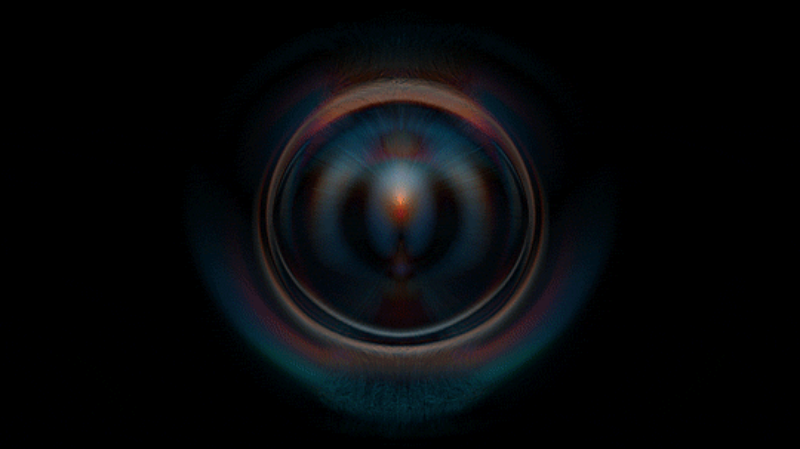

Chemical landscapes
A visual fragment from the ongoing research around perception, biological signal, and multisensory interfaces.


MIT Affiliate · Scientist · Entrepreneur
Building the tools that make the invisible chemistry of reality measurable, readable, and eventually reproducible.
A space for visual notes, moving studies, laboratory fragments, travel images, prototype moments, and atmospheric records from the work in progress.
A visual fragment from the ongoing research around perception, biological signal, and multisensory interfaces.
A moving note on atmosphere, interference, field behavior, and invisible structure.
Reach out for research, collaborations, speaking, company building, or frontier technology conversations.

I'm Alistair. I arrived on this Earth in the spring of 2002, and ever since I was a child I have been deeply sensitive to perception — especially to smell, but also to color, sound, texture, and the subtle ways reality impresses itself onto the senses.
I grew up experiencing the world with unusual intensity. Episodes of synesthesia, strong sensory sensitivity, and a constant fascination with invisible signals shaped the way I learned to observe. For me, perception was never a passive act. It was always a field of inquiry — something to examine, decode, and eventually rebuild. I never felt separate from these patterns, nor from the universe they emerged from. I felt inside them.
Smell, to me, has always represented a domain of experience that language cannot fully contain.
My formation did not happen along one straight institutional path. It happened across nature, animals, painting, chemistry, physics, philosophy, and technology. I was always less interested in memorizing information than in understanding how the layers of reality connect: how biology becomes sensation, how matter becomes signal, how experience becomes meaning, and how tools can extend the limits of what we are able to perceive.
Travel also played a decisive role. Moving across countries, cultures, and disciplines exposed me to different ways of living and thinking. It taught me that intelligence is not uniform, talent is not standardized, and that the most interesting futures are often built by people who refuse to fit cleanly into pre-existing categories.
Very early on, I realized that traditional education was not designed for the way my mind worked. What at first looked like laziness was, in truth, resistance — a defense against systems that compressed curiosity instead of expanding it. In 2020, during the pandemic, as soon as I was legally able to do so, I formally withdrew from school. That decision was not an escape. It was the beginning of a necessary process: removing inherited mental patterns, recovering autonomy, and rebuilding my trajectory on my own terms.
Between 2021 and 2022 I spent several months at H-Farm near Venice, learning programming languages, prototyping hardware, and engaging with founders across entertainment, healthcare, food, wine, fashion, and technology. Then came consulting, conferences, and speaking engagements across Europe, the Middle East, Japan, and the United States.
A major acceleration came when I began collaborating with Paul Pu Liang at MIT Media Lab and MIT EECS, where he leads the Multisensory Intelligence group. That collaboration expanded into work on devices and multimodal AI systems for capturing, analyzing, and recognizing smells — and led to public research output including SMELLNET, a large-scale dataset for real-world smell recognition.
Today, my role is fundamentally translational and execution-oriented. I define strategic direction, convert technical complexity into development architecture, align hardware, AI, and software priorities, build strong teams, and transform frontier research into real services and experiences. I focus on leverage: the few decisions that truly change outcomes.
I am not interested in predicting the future as if it were weather. What matters more to me is deciding what kind of future is worth building — and what role I want to play in bringing it into existence.
Over the last few decades, humanity has made extraordinary progress in the world of bits. We built the internet, smartphones, social media, machine learning systems, and now generative AI. But in the world of atoms — in physical reality, outside the screen — progress has felt comparatively narrow. We became excellent at information, but less ambitious about matter, energy, perception, and civilization-scale systems.
A civilization cannot live indefinitely inside abstractions. It needs tools that reconnect intelligence to the physical world.
In the near future, most forms of work that are fully legible to a computer will be automated. At that point, the central bottlenecks become compute, energy, chips, and physical deployment. Intelligence stops being only a software question and becomes an infrastructure question.
But digital intelligence alone is not enough. To truly operate in the real world, machines need richer perception. Today, most artificial systems can already process language, images, and sound at extraordinary levels. Yet the world is not made only of text, pixels, and audio. It is also made of chemicals, volatile compounds, biological traces, gradients, contamination, fermentation, decay, health signals, and atmospheric changes. The future of intelligence has to become multisensory.
This is one reason I care so deeply about smell. Smell is not a decorative sense. It is an information channel. It gives early warning before many events become visible. It detects what cameras cannot see and what language cannot describe well. It often reveals the hidden state of a system before other modalities do.
That opens a huge design space. In homes and cities, chemical sensing could become part of ambient intelligence. In healthcare, noninvasive olfactory sensing could support prevention, monitoring, and diagnosis. In agriculture, early detection of plant stress and quality deviations. In robotics, a missing dimension of perception for navigating dangerous environments.
My vision is that the future will be defined less by isolated software products and more by interfaces that dissolve the boundary between body, computation, and environment. The best interfaces will not feel like gadgets — they will become more intuitive, more embodied, more ambient, and in some cases more neural.
That future will not arrive automatically. It will happen only if people decide to build it. That is the future I want to help create.